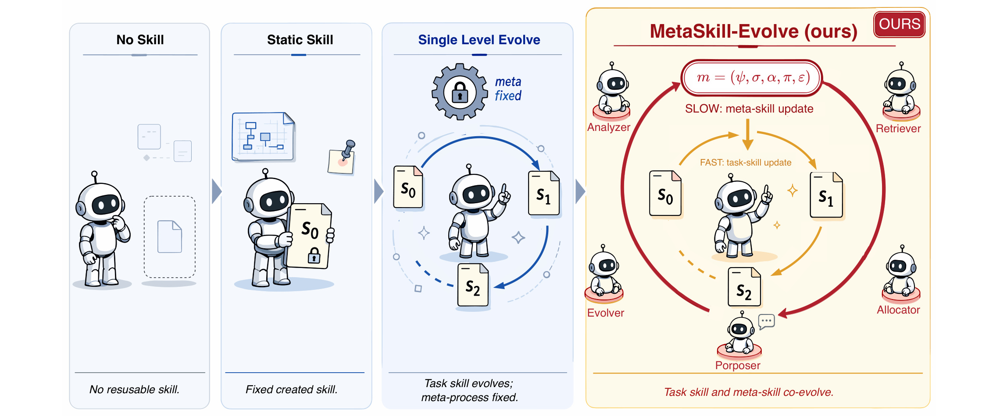
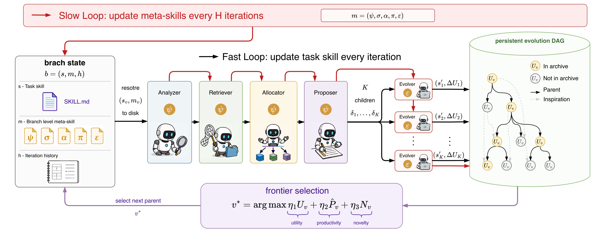
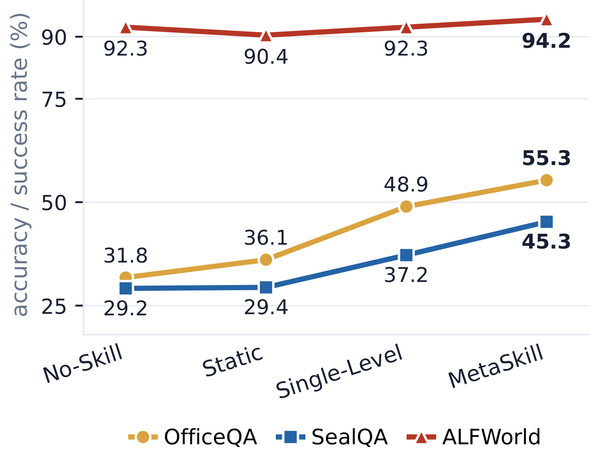
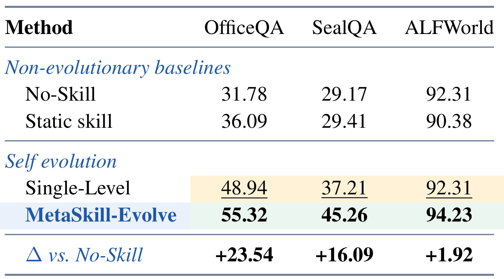
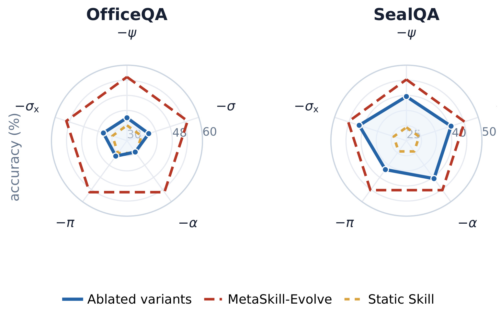
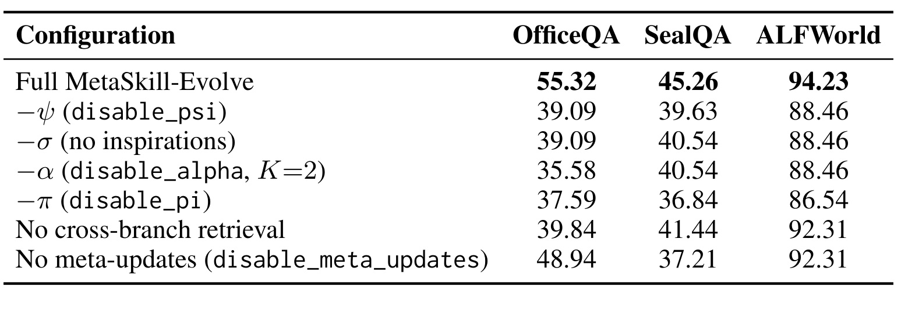
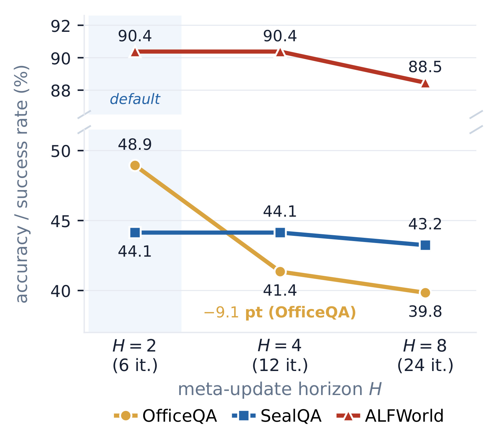
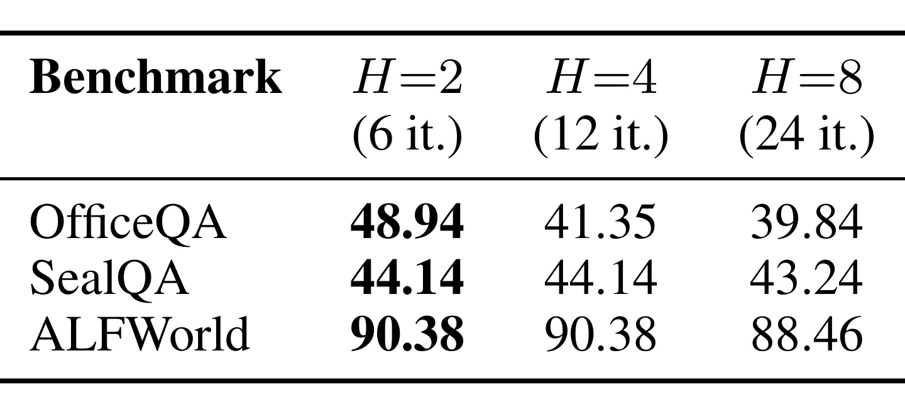

MetaSkill-Evolve: Recursive Self-Improvement of LLM Agents via Two-Timescale Meta-Skill Evolution
这篇论文讨论的是 LLM Agent 的技能文件如何从“被人写好后静态使用”，推进到“Agent 可以改写自己的任务技能”，再进一步变成“连改进任务技能的元过程也可以被分支局部地改写”。论文来自 LMU Munich、The Chinese University of Hong Kong、MCML 和 MemAgents Lab，作者包括 Zefeng Wang、Minxi Yan、Jinhe Bi、Sikuan Yan、Volker Tresp、Yunpu Ma。论文入口为 arXiv:2607.05297。论文未在 arXiv comment 中给出可核验的独立代码或项目页，因此本文只按论文正文和公开摘要记录方法与实验。
现有 LLM Agent 可以通过外部技能和执行轨迹改写任务技能，但这类自进化仍停在非递归层面：它只改“Agent 做什么”，不改“Agent 怎样改进自己”。当诊断失败、编辑范围、检索经验和搜索预算这些元过程被一次性写死后，系统遇到不同类型错误时无法修正自己的改进方式，固定元过程就会成为长程 Agent 持续提升的瓶颈。
1. 背景和问题
LLM Agent 在长程任务上越来越依赖外部技能。这里的技能不是模型参数，而是可读、可编辑、可复用的过程性知识文件，例如一个 SKILL.md 里写着怎样调用工具、怎样拆分问题、怎样处理特定失败案例。论文把这种技能看成 Agent harness 中可以随工作流携带的文件系统工件：模型本身可以冻结，Agent 能力却可以通过技能文件获得任务知识、工具规约和历史经验。这个设定对今天的自动化工程很现实，因为很多长跑任务的失败并不是模型一句话不会答，而是已有流程没有把“如何检查、如何修补、如何复用上次失败”写成稳定技能。
过去一批 self-improving agent 工作已经把任务技能从静态文件变成可迭代对象。典型流程是：执行任务后收集失败轨迹，Analyzer 诊断失败原因，Proposer 写出修改建议，Evolver 把建议落到技能文件中，然后用新技能再次执行。这样确实能让技能一次次长出更多 task-specific 经验。问题在于，这条“分析、提出、演化”的外层流程本身仍然是人预先设计好的。同一个诊断策略、同一种检索经验的方式、同一套分配搜索预算的规则，会被套到所有失败上。论文把这叫 non-recursive self-evolution：任务技能在变化，优化任务技能的算子不变化。
这个 distinction 是论文的核心。作者认为，一个分支当前的技能分数高，不代表它后续还能持续产出更好的技能；反过来，一个当前分数中等的分支，可能拥有更会诊断失败、更会复用跨分支经验、更会分配 child budget 的改进过程，因此未来更有开发价值。换句话说，演化搜索里至少有两个量：一是当前 task skill 的效用，二是当前 meta-process 生成更强后代的生产率。如果只看当前分数，就容易把资源继续投给已经停滞的高点；如果只看一次子节点增益，又容易追逐噪声。MetaSkill-Evolve 的问题意识就是把“当前技能好不好”和“这个分支还会不会继续变好”分开建模。

Figure 1 把这条演进线画得很直观。No Skill 是没有可复用技能记忆，Static Skill 是人工写好 s0 后锁死，Single Level Evolve 是 s0 -> s1 -> s2 的任务技能会变，但齿轮上的 meta-process 仍被锁住。最右侧 MetaSkill-Evolve 则让每个分支携带一个元技能 m=(ψ,σ,α,π,ε)，外圈慢速更新元技能，内圈快速更新任务技能。图里有一个容易被忽略的点：论文不是引入一个额外大模型，也不是把元学习做成参数训练，而是把“怎样诊断、怎样检索、怎样分配、怎样提案、怎样落盘”也写成和任务技能同格式的 Markdown 技能文件。这样 recursive self-improvement 被限制在一个可审计、可快照、可恢复的文件层，而不是让 Agent 任意改自己的执行框架。
对推荐系统和大模型工程而言，这篇论文值得看，不是因为它直接优化 CTR 或召回，而是因为它处理的是长周期自动化系统中很常见的“流程学习”问题。推荐系统有特征修复、召回链路调参、在线实验复盘，大模型 Agent 有代码修复、文献调研、Web 任务和工具调用。如果每次只记录“这次任务怎么做”，而不记录“下次遇到相似错误时应该怎样诊断、怎样调度、怎样比较多个修复分支”，系统最终会积累一堆 task-level patch，却缺少能跨任务迁移的 improvement policy。MetaSkill-Evolve 把这个 improvement policy 当成一等对象，提供了一种可落地的设计语言。
2. 方法
2.1 问题形式化：任务技能效用与元生产率
论文先把任务技能定义为一个 Markdown-format 的 Agent program。给定任务分布 $T$、输入 $x$ 和参考输出 $y$，加载技能 $s$ 的 Agent 记为 $A_s$，技能效用是执行结果相对参考答案的期望奖励：
符号解释：$s$ 是当前任务技能文件，$A_s$ 是加载该技能的 Agent，$r(A_s(x),y)$ 是预测和参考输出之间的评分，范围在 [0,1]。论文实际不能访问完整任务分布，所以用 held-out validation batch 上的准确率估计 $U(s)$。这个公式对应的不是模型训练 loss，而是“这个技能文件在当前任务上到底好不好”的外部评价。
只定义 $U(s)$ 还不够，因为它会把演化搜索变成贪心地追高当前分数。MetaSkill-Evolve 增加了一个慢变量：元技能在当前技能附近产生更强后代的能力。论文把每个分支写成状态 $b=(s,m,h)$，其中 $h$ 是这个分支的迭代历史，$m$ 是控制改进流程的元技能：
符号解释：ψ 是 Analyzer 的诊断策略，σ 是 Retriever 的分享和检索策略，α 是 Allocator 的预算分配策略，π 是 Proposer 的编辑提案策略，ε 是 Evolver 的落盘和验证策略。关键不是这五个希腊字母本身，而是它们都以 SKILL.md 形式存在，和任务技能一样可被恢复、改写和快照。这样一个分支的“做事方法”和“改进方法”都变成状态的一部分。
元生产率定义为在当前任务技能 $s$ 和元技能 $m$ 下，平均每个 child proposal 带来的效用增益：
符号解释：$K$ 是 Allocator 在某次扩展中给出的 child budget，$s'_k$ 是第 $k$ 个候选子技能，$U(s'_k)-U(s)$ 是它相对父技能的验证集增益。这个量解释了为什么论文要强调 two-timescale：快环每次改任务技能，慢环关心最近一段时间里这个改进政策是否仍能产出正增益。MetaSkill-Evolve 的核心机制，是把“能否继续产生更好后代”显式纳入搜索，而不是只保存当前分数最高的技能。
2.2 分支状态和五个可演化元技能文件
论文把一次任务技能改写拆成五个 specialist agents。Analyzer ψ 读失败轨迹，输出失败标签 ϕ 和自由形式分析；Retriever σ 根据标签从同分支和跨分支节点里找 inspiration；Allocator α 根据历史增益和分析决定 child budget K；Proposer π 把失败、分析和 inspiration 变成具体编辑提案 δ；Evolver ε 把提案写到技能文件并验证修改确实发生。这个拆法看起来像工程 pipeline，但论文真正的创新在于：五个 component 的行为说明本身也是可演化 skill file。
这种设计避免了两个极端。一个极端是把元过程写死：所有错误都用同一个诊断词表，同一个检索宽度，同一个预算。另一个极端是让 Agent 自由改框架代码，难以审计、难以复现。MetaSkill-Evolve 走中间路线：每个 component 的可变部分是一份 Markdown 技能，Agent 仍用同一个冻结 backbone 执行这些技能。慢环可以修改 ψ，让 Analyzer 学会更细的 failure tag；也可以修改 σ，让 Retriever 更重视跨分支还是同分支经验；还可以修改 α，在停滞时扩大 child budget，在最近编辑有效时收缩搜索。这里有一个实际工程价值：任务技能和元技能都能被分支局部化。不同分支不需要共享同一套全局 policy。一个分支可能学会针对表格抽取失败使用更保守的诊断和编辑策略，另一个分支可能学会对算术推理失败做更激进的搜索。跨分支迁移只通过 Retriever 找到 inspiration，而不是把所有分支的元过程立即合并成一个全局控制器。风险也在这里：如果元技能被错误更新，它会改变后续修改技能的方式，因此论文必须依赖验证集增益和慢环聚合来过滤单例噪声。
2.3 SQLite 演化图和前沿选择分数
MetaSkill-Evolve 不把演化历史存在一个固定 beam 里，而是保存成 SQLite 中的有向无环图。每个节点 $v$ 保存 $(s_v,m_v,U_v,\Delta U_v,\phi_v)$，还带有 branch path 和被选中次数。边有两类：lineage edge 表示某个 child 由父节点演化得到，inspiration edge 表示某个跨分支节点被 Retriever 用作提案参考。所有节点创建后不原地修改，因此图保持无环；运行时选择父节点前会把对应任务技能和元技能快照恢复到磁盘，避免当前工作区残留状态污染分支。
子节点进入 archive 有一个硬条件：相对父节点必须严格提升，即 $\Delta U_v>0$。不提升或退化的 child 不会成为未来可部署父节点，但仍保留在图中供 Retriever 参考。这是一个很务实的处理：失败编辑可能不能直接选为父节点，却能告诉后续分支“这种改法不行”或“这种诊断标签对应哪些失败”。如果完全丢掉失败节点，跨分支经验会只剩成功案例，反而损失了修复流程里很重要的负样本。
前沿选择分数把当前效用、元生产率和新颖性组合起来：
符号解释：$F$ 是刷新后的 frontier，$U_v$ 是节点当前任务效用，$\widehat{P}_v$ 是从该节点后代增益估计出来的 meta-productivity，$N_v$ 是新颖性或冷却项，$\eta_1,\eta_2,\eta_3$ 是三项权重。论文附录默认权重为 1.0/0.5/0.25，说明效用仍是主项，但元生产率和探索多样性会显著影响父节点选择。
新颖性写成：
符号解释：$times\_selected_v$ 是节点已经被选为父节点的次数。被选次数越多，$N_v$ 越小，节点必须靠更高 $U_v$ 或 $\widehat{P}_v$ 才能再次被选中。这个项不是为了平均轮转所有分支，而是防止一个高分但停滞的节点垄断预算。论文也讨论了删掉任一项的后果：没有 $\widehat{P}$ 会锁在高效用但停滞的节点，没有 $N$ 会坍缩到单一路径，没有 $U$ 又会过分相信 noisy child gain。

Figure 2 把方法的状态流画清楚了。左侧分支状态包含 task skill s、branch-level meta-skill m 和 history h，中间是 Analyzer、Retriever、Allocator、Proposer、Evolver 五个 agent，右侧是 persistent evolution DAG。红色慢环每 H 次 fast iteration 更新 meta-skill，黑色快环每轮更新 task skill，底部 frontier selection 用 utility、productivity、novelty 共同选择下一个 parent。图里值得注意的是 Evolver 出现多次：快环里它把多个 child proposal 写成任务技能，慢环里它还会把 meta-skill 文件本身写出新版本。这样递归并不是无限自改，而是在“任务技能文件”和“五个元技能文件”之间受控展开。
2.4 快慢两条时间尺度如何闭环
快时间尺度对应 Algorithm 1。系统先从 frontier 选择父节点，恢复 $s_v$ 和 $m_v$ 到磁盘；然后在训练 batch 上评估，选择分数最差的样本作为 diagnostic target。选择 worst case 有一定风险，但论文用 validation gain 判断 child 是否有效，所以 worst case 只是高信号的触发器，不直接决定部署。随后 Analyzer 产出 tag 和 analysis，Retriever 找 inspiration，Allocator 给出 K，Proposer/Evolver 生成并评估 K 个 child。每个 child 都在验证集 $D_{val}$ 上算 $\Delta U_k$，只有提升者进入 archive。慢时间尺度对应 Algorithm 2。每隔 H 次快环，系统把最近 H 个 descendant 的标签、诊断、结果和平均增益汇总成一个 meta-failure trace。慢环用这个 trace 诊断“当前改进过程哪里不生产”，再把同一套五 agent pipeline 应用到 meta-skill 文件上。慢环的生产率估计写成：
符号解释：$\mathcal{H}$ 是最近 H 个子节点或后代窗口，$\Delta U_u$ 是每个后代相对父节点的验证集增益。这个估计会被折进 synthetic meta-failure trace：如果最近很多编辑无效，慢环看到的不是单个任务失败，而是“这个改进政策最近没有把失败转化为收益”。论文强调慢环不是只修改一个被 Analyzer 点名的 component；Analyzer 的诊断用于 failure tag 和检索方向，但 Proposer/Evolver 会成套改写五个 meta-skill 文件，以保持跨 component 一致性。
这种快慢设计的好处，是把元过程更新从单个失败案例里抽离出来。任务技能可以频繁响应具体错误，元技能则需要聚合后再改，否则很容易把一次偶然失败解释为全局诊断策略错误。另一方面，H 不能太大。若慢环太少更新，task skill 已经被快环移动到新区域，旧 meta-skill 对新的失败形态就可能失配；这也是后面 horizon sweep 要证明的事。方法章可以这样理解：MetaSkill-Evolve 把“技能演化”变成一个带版本控制的双层搜索系统，内层找更好的 task skill，外层找更会产生好 task skill 的 policy。
3. 实验结果
3.1 设置和主结果
论文实验选择 OfficeQA、SealQA 和 ALFWorld。OfficeQA/SealQA 更偏问答和 grounded reasoning，ALFWorld 是文本到具身环境的交互成功率任务。每个 benchmark 按 category 做 stratified split，分成 train、validation、held-out test：train 用来挖 failure，validation 用来给 child skill 打分和做 frontier selection，test 在演化过程中不可见。这个分割很重要，因为 MetaSkill-Evolve 的主张不是记住训练失败，而是让技能和元技能在未见测试分区上泛化。
所有配置共享同一个冻结 Gemma-4 31B backbone，五个 pipeline agents 也都用这一个 backbone，不做 fine-tuning。baseline 有四个：No-Skill 是无技能、无 reflection 的原始 agent；Static Skill 加载人工初始技能但不改；Single-Level Evolution 只运行快环，慢环冻结，且没有 cross-branch sharing 和 meta-skill updates；MetaSkill-Evolve 是完整双时间尺度系统。这个设置让结果比较聚焦：如果完整方法更好，差异主要来自技能文件和元技能文件的演化，而不是模型容量变化。

Figure 3 先展示整体趋势。OfficeQA 从 No-Skill 的 31.8 上升到 Static 的 36.1，再到 Single-Level 的 48.9，最后 MetaSkill-Evolve 到 55.3；SealQA 从 29.2、29.4、37.2 到 45.3，也呈现逐层提升；ALFWorld 起点已经在 92.3 附近，Static 反而略降到 90.4，Single-Level 回到 92.3，完整方法到 94.2。图中的信息不是“每个任务都大幅提升”，而是不同 regime 的贡献不同：QA 任务仍有足够 headroom，技能、任务演化和元演化都能带来明显收益；ALFWorld 接近 ceiling，因此慢环只给出小幅但仍为正的提升。

Table 1 给出精确数值。MetaSkill-Evolve 在 OfficeQA、SealQA、ALFWorld 上分别是 55.32、45.26、94.23，比 No-Skill 高 +23.54、+16.09、+1.92；比 Single-Level 分别高 +6.38、+8.05、+1.92。这个表支撑了论文最重要的因果解释：从 Static 到 Single-Level 的收益说明“改任务技能”有效，从 Single-Level 到 MetaSkill-Evolve 的收益说明“改改进过程”还有额外价值。尤其 SealQA 上 Static 几乎不比 No-Skill 好，但 Single-Level 和 MetaSkill-Evolve 都明显提升，说明只写一个初始技能不够，必须让技能经历失败驱动的演化。
这里也要看边界。ALFWorld 的 Static Skill 低于 No-Skill，表明人工初始技能可能对高基线任务产生干扰；Single-Level 没能超越 No-Skill，完整方法的 +1.92 才是最终收益。作者把这解释为 backbone 已接近饱和，validation 里可学习失败少。这个结果没有被包装成大幅突破，反而提醒读者：MetaSkill-Evolve 更适合仍有可诊断失败、技能改写能影响策略的任务；如果任务已经接近天花板，元技能演化的收益会受限于失败信号密度。
3.2 组件消融：五个元技能不是装饰
为了确认五个 component 不只是架构命名，论文做了 component ablation。-ψ 关闭 Analyzer 的诊断策略，-σ 去掉 Retriever inspiration，-α 固定 child budget，-π 去掉结构化 proposal，另有 no cross-branch retrieval 和 no meta-updates 两个条件。Evolver ε 总是执行，因为没有它就无法落盘技能；在 -π 时，Evolver 只消费原始 analysis 而不是结构化 proposal。

Figure 4 展示 OfficeQA 和 SealQA 的 radar ablation。红色虚线是完整 MetaSkill-Evolve，黄色虚线是 Static Skill，蓝色 polygon 是去掉某个元技能后的效果。OfficeQA 上最脆弱的是 α，完整方法 55.32 降到 35.58，论文解释为 OfficeQA 有一批相关算术错误，需要 Allocator 在停滞时自适应扩大 child budget 才能找到成功子节点；π 也很重要，去掉后降到 37.59。SealQA 则是 π 最关键，完整方法 45.26 降到 36.84，说明这个任务更依赖“把诊断转成具体编辑”的精确内容，而不是单纯增加搜索宽度。换句话说，Figure 4 不是只说明“消融都会降分”，而是在提示不同任务的 bottleneck 不同：OfficeQA 的失败可能需要多角度 child 搜索，SealQA 更需要把检索到的 inspiration 和失败分析组织成对的编辑方案。

Table 3 补上 ALFWorld 和所有数值。完整方法是 55.32/45.26/94.23；去掉 ψ 后是 39.09/39.63/88.46，去掉 σ 是 39.09/40.54/88.46，去掉 α 是 35.58/40.54/88.46，去掉 π 是 37.59/36.84/86.54。no cross-branch retrieval 是 39.84/41.44/92.31，no meta-updates 是 48.94/37.21/92.31，后者恰好复现 Single-Level row。这个表比 Figure 4 更能说明慢环的实际贡献：当不更新 meta-skill 时，系统退化成单层演化；当去掉跨分支 retrieval 时，ALFWorld 回到 92.31，论文据此认为跨分支可复用子程序解释了 ALFWorld 那 +1.92 的 meta-gain。
组件消融也提示一个工程含义：不同任务不是同一个元技能最重要。OfficeQA 需要更好的预算调度，SealQA 和 ALFWorld 更依赖 proposal 质量，跨分支分享在部分任务上是关键。对自动化系统来说，这意味着“失败诊断模板”“经验检索策略”“并发分支数”“编辑提案格式”都不应永久写死。更合理的做法是让每条任务线保留自己的元过程历史：某些任务线更会调预算，某些任务线更会写 proposal，系统再通过 Retriever 选择性复用。
3.3 慢环更新频率和数据划分敏感性
慢环的 horizon H 决定多少次 task-skill 快速迭代之后更新一次 meta-skill。H 太小，元技能会被单个失败样本的噪声牵着走；H 太大，任务技能已经变化多轮，旧元技能可能跟不上新的失败分布。论文做了 horizon sweep，固定 meta-update 次数为三次，把 H 从 2 扩到 4 和 8，对应总 fast iterations 为 6、12、24。注意这里的 H=2 有三次 meta-update，和主表五次 fast iteration、两次 meta-update 的默认点不完全逐格一致，作者也明确说明不能 cell-for-cell 对齐。

Figure 5 显示 H=2 在三个 benchmark 上最好。OfficeQA 对 stale meta-skill 最敏感，从 48.9 降到 41.4，再到 39.8；SealQA 在 H=2 和 H=4 都是 44.1，到 H=8 才小降到 43.2；ALFWorld 在 H=2 和 H=4 为 90.4，H=8 降到 88.5。图中的 broken y-axis 是为了同时显示 near-ceiling 的 ALFWorld 和低区间 QA。这个实验支持论文的核心直觉：元技能不该每个失败都改，但也不能太久不改；在这些任务上，较短的慢环间隔更能保持 meta-process 对快环变化的响应。尤其 OfficeQA 的下滑说明，如果任务技能已经经过多轮快环变动，而 Analyzer/Retriever/Allocator 仍停留在旧失败分布上，慢环再去大幅改写元技能时就可能覆盖已经有效的局部修复。

Table 2 记录了 exact values：OfficeQA 在 H=2/4/8 下是 48.94/41.35/39.84，SealQA 是 44.14/44.14/43.24，ALFWorld 是 90.38/90.38/88.46。OfficeQA 的 9.1 点跌幅最大，说明它的失败形态和任务技能更新更容易让元技能过期；SealQA 和 ALFWorld 的曲线比较平，可能因为 proposal 内容或 ceiling 限制占主导。这个结果也提醒使用者：如果把 MetaSkill-Evolve 搬到真实工程系统里，H 不应被当成全局常数，而应随任务失败密度、验证集大小、编辑成本和分支探索噪声调节。
论文附录还看了 train/validation split。Table 4 表明在 validation 固定 0.10 时，增加训练比例只带来 modest gains：ALFWorld 从 87.74 到 90.57 单调上升，SealQA 和 OfficeQA 在噪声范围内波动。Table 5 则说明对 ALFWorld 这种高基线任务，增大 validation split 更有帮助：在 train ratio 为 0.05/0.10/0.15 时，val 从 0.10 到 0.25 分别提升 +2.0、+4.3、+2.5 点。原因很直观：当原始 agent 已经解决大多数 episode，小验证集里失败太少，Analyzer 几乎看不到可学习信号；扩大 validation 才能暴露足够失败案例，让 skill proposal 和 frontier selection 有东西可学。这个结果让论文更可信，因为它没有把 benchmark split 当成无关细节，而是承认演化系统高度依赖 failure signal。
4. 总结
4.1 我的判断
这篇论文的贡献可以概括为一句话：把 Agent 的改进过程本身做成可快照、可分支、可演化的技能文件。它没有声称解决开放式递归自改进的全部问题，而是在工程上给出一个 bounded recursion：任务技能 s 快速变，元技能 m=(ψ,σ,α,π,ε) 慢速变，两者都被持久化在 DAG 中，并通过 held-out validation 增益决定哪些 child 能进入 archive。这个设定比“让 Agent 自己随便改代码”可控，也比“只靠固定 prompt 反思失败”更有发展空间。
我认为最有价值的部分是 $U(s)$ 与 $P(m|s)$ 的区分。很多自动化系统只记录当前成功率或当前最佳技能，却没有显式衡量一个分支继续改善的能力。MetaSkill-Evolve 把这种能力变成 frontier score 的一项，使搜索能离开高分但停滞的路径。这个思想能迁移到推荐系统实验、代码修复和论文调研：有些方案当前指标一般，但它的诊断规则、复用经验、调参策略更会产出后续提升，应该继续保留探索预算。
4.2 局限与风险
第一，论文仍然依赖可用且可信的 validation batch。若验证集太小、太噪或和真实任务偏离，$U(s)$ 和 $P(m|s)$ 都会误导搜索。ALFWorld 的 split 敏感性已经说明，失败信号稀薄时系统很难学习。第二，元技能改写虽然被限制为 Markdown 文件，但一旦诊断策略或 proposal 策略被错误更新，会影响后续很多 child，不像普通 task-skill patch 那样局部。慢环聚合能减轻但不能消除这个风险。第三，实验只覆盖三个 agentic benchmark，且都在冻结 Gemma-4 31B 下运行；不同模型、工具栈、真实文件系统任务和线上约束下，五 agent pipeline 的成本与收益可能不同。第四，论文没有公开可核验代码链接，本轮只能基于论文文本检查方法和实验，复现实验细节仍需等待实现或补充材料。
4.3 工程启发与后续跟进
工程上可以先不完整实现 MetaSkill-Evolve，而是借用它的状态拆分。对长跑 Codex 自动化，任务 prompt、质量检查规则、worker 调度策略和返工策略可以分开保存；每次失败不仅记录“正文哪里不合格”，还记录“诊断流程为什么漏掉它”“截图策略为什么裁成页带”“验证器为什么没挡住”。这些元记录不应只写进一次性日志，而应变成下一轮 worker 可读取的 meta-skill。对推荐系统，也可以把特征调试、召回扩展、排序 loss 搜索和线上验证预算拆成可演化策略，而不是固定一个所有实验都复用的调参模板。
后续我会重点跟三件事。第一，看作者是否释放代码或实验脚本，尤其是 SQLite graph、skill snapshot 和 five-agent prompts 的具体实现。第二，关注这类元技能演化在真实代码库或 Web 任务上的成本，特别是每次慢环 co-edit 五个文件是否会带来过度修改。第三，对比 GEPA、SkillWeaver、Skill1、ReasoningBank 等相近工作，确认 MetaSkill-Evolve 的优势到底来自 slow-loop meta update、cross-branch retrieval，还是来自更强的实验 harness。若要自己复现，最小闭环可以先只实现 ψ/π/ε 三个 component，再逐步加入 σ 和 α，因为消融表显示不同任务的关键 component 不同，没必要一开始就把完整框架搬进生产系统。